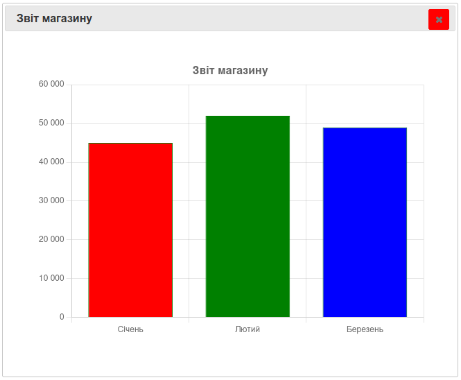

Досі для роботи з інформацією ми використовували списки Python, словники та масиви NumPy. Вони чудово підходять для числових розрахунків, але в реальному житті дані рідко бувають суто числовими. Найчастіше ми бачимо їх у вигляді великих таблиць, де в одному стовпчику записано ім'я, в іншому — дата народження, а в третьому — оцінка чи вартість товару.
Працювати з такими змішаними даними за допомогою NumPy незручно. Саме тому для аналізу даних використовують найпопулярнішу бібліотеку Python — Pandas (назва походить від Panel Data — панельні дані).
Коли обсяги інформації стають завеликими для ручного аналізу в Excel, або коли нам потрібно автоматизувати обробку сотень файлів, на допомогу приходить Pandas. Вона дозволяє за допомогою коротких команд робити те, на що в Excel пішли б години роботи.
Сфери застосування Pandas:
Загальноприйнятим світовим стандартом є імпорт бібліотеки Pandas із коротким псевдонімом pd:
import pandas as pd
# Тепер усі інструменти бібліотеки доступні через "pd."
Головний секрет Pandas полягає в тому, що вона пропонує абсолютно новий спосіб мислення — роботу не з окремими змінними, а з усією таблицею одразу.
Основною структурою в Pandas є DataFrame (датафрейм).
DataFrame— це програмна аналогія звичайної електронної таблиці, яку ви неодноразово бачили в Excel або Google Таблицях. По суті, це те саме, що класний журнал: рядки — це учні, стовпці — предмети, а на перетині — оцінка.
Як і будь-яка таблиця, DataFrame складається з:
Найпростіший спосіб створити таблицю самостійно в коді — змайструвати її зі звичайного словника Python, де ключами будуть майбутні заголовки стовпців, а значеннями — списки з даними:
import pandas as pd
# Готуємо словник із даними учнів
data_dictionary = {
"Ім'я": ["Оля", "Іван", "Марія"],
"Оцінка": [12, 10, 11],
"Місто": ["Київ", "Нечаївка", "Львів"]
}
# Перетворюємо словник на таблицю Pandas
df = pd.DataFrame(data_dictionary)
Значеннями в DataFrame можуть бути не тільки числа, а й текст. Наприклад, класний керівник міг лишити коментарі:
pd.DataFrame({
'Оля': ['Чудова робота!', 'Треба ще попрацювати'],
'Максим': ['Непогано', 'Відмінно']
})
| Оля | Максим | |
|---|---|---|
| 0 | Чудова робота! | Непогано |
| 1 | Треба ще попрацювати | Відмінно |
Ключі словника стають назвами стовпців, а списки — значеннями у стовпцях. За замовчуванням рядки нумеруються від 0, але часто зручніше дати їм власні імена. Список підписів рядків називається індексом (Index), і його можна задати параметром index:
pd.DataFrame({
'Математика': [10, 7],
'Історія': [9, 8]},
index=['Оля', 'Максим'])
| Математика | Історія | |
|---|---|---|
| Оля | 10 | 9 |
| Максим | 7 | 8 |
Тепер зрозуміло без пояснень, чия це оцінка.
Якщо вивести таблицю на екран через print(df), Pandas надрукує її в структурованому вигляді:
print(df)
# Виведе:
# Ім'я Оцінка Місто
# 0 Оля 12 Київ
# 1 Іван 10 Нечаївка
# 2 Марія 11 Львів
У великих таблиць ми завжди можемо запитати їхні технічні параметри (без дужок () наприкінці):
df.shape — повертає кортеж із розмірами (кількість_рядків, кількість_стовпців).df.columns — показує список усіх заголовків стовпців.df.index — надає інформацію про нумерацію рядків.Коли ми видобуваємо з DataFrame тільки один стовпець (наприклад, df["Оцінка"]), Pandas повертає об'єкт типу Series.
Series(серія) — це одновимірний масив даних, який має мітки-індекси. Можна сказати, щоDataFrame— це просто велика родина, зібрана з кількох об'єктівSeries, які стоять поруч і мають спільний індекс.
Series можна створювати і окремо від таблиці, просто зі списку значень:
pd.Series([10, 7, 9, 8, 6])
0 10
1 7
2 9
3 8
4 6
dtype: int64
Так само, як і в DataFrame, тут можна задати підписи рядків через index, а ще Series має власну назву (name):
pd.Series([10, 7, 9, 8, 6],
index=['Контрольна 1', 'Контрольна 2', 'Контрольна 3', 'Контрольна 4', 'Контрольна 5'],
name='Оля, математика')
Контрольна 1 10
Контрольна 2 7
Контрольна 3 9
Контрольна 4 8
Контрольна 5 6
Name: Оля, математика, dtype: int64
DataFrame зручно розглядати як кілька "склеєних" разом Series.
Коли в таблиці тисячі рядків, виводити її повністю на екран немає сенсу. Щоб швидко зрозуміти, з якими даними ми маємо справу, використовують дві команди:
df.head(n) — показує перші n рядків таблиці (якщо не вказати число, виведе 5).df.tail(n) — показує останні n рядків таблиці.# Перегляд перших двох рядків таблиці
print(df.head(2))
У реальному житті програмісти не записують великі обсяги даних вручну в коді - вони зчитують готові звіти та бази даних з файлів комп'ютера. Найпоширеніший формат — CSV-файл (Comma-Separated Values, значення, розділені комами). Виглядає він так:
Учень,Математика,Історія,Українська
Оля,10,9,8
Максим,7,8,9
Ігор,9,9,10
Якщо класний керівник вивантажив весь журнал у файл journal.csv, прочитати його в pandas можна функцією pd.read_csv():
# Зчитування файлу CSV (значення, розділені комами)
journal = pd.read_csv("journal.csv")
# Зчитування файлу Excel
df_excel = pd.read_excel("report.xlsx")
# Зчитування файлу JSON
journal_json = pd.read_json("journal.json")
Перевірити розмір таблиці можна атрибутом shape:
journal.shape
(30, 6)
Тобто в журналі 30 учнів (рядків) і 6 стовпців (наприклад: ім'я, і п'ять предметів).
Якщо у файлі вже є свій стовпець-ідентифікатор (наприклад, номер учня в журналі), і ми не хочемо, щоб pandas створював ще один індекс поверх нього, можна вказати, який стовпець використати як індекс:
journal = pd.read_csv("journal.csv", index_col=0)
Коли таблиця готова — наприклад, після підрахунків чи фільтрації — її можна зберегти назад у файл, щоб відкрити пізніше або надіслати комусь:
# Зберегти у CSV (параметр index=False відключає запис технічних номерів рядків 0, 1, 2)
df.to_csv("clean_data.csv", index=False)
# Зберегти у файл Excel
df.to_excel("final_report.xlsx", index=False)
# Зберегти у файл JSON
journal.to_json("journal_готовий.json")
Параметр index=False означає, що номери рядків не потрібно записувати у файл окремим стовпцем — часто це зайве.
import pandas as pd
# Створюємо класний журнал вручну
journal = pd.DataFrame({
'Учень': ['Оля', 'Максим', 'Ігор'],
'Математика': [10, 7, 9],
'Історія': [9, 8, 9]
})
print("Журнал:")
print(journal)
print("Розмір таблиці:", journal.shape)
# Зберігаємо журнал у CSV-файл
journal.to_csv("journal.csv", index=False)
# Читаємо його назад
journal_з_файлу = pd.read_csv("journal.csv")
print("\nПрочитано з файлу:")
print(journal_з_файлу.head())
Уміння швидко знайти потрібне значення в таблиці — одна з найважливіших навичок роботи з даними. Розглянемо таблицю фруктового магазину:
shop = pd.DataFrame({
'фрукт': ['яблука', 'банани', 'апельсини', 'груші'],
'ціна_за_кг': [35, 42, 55, 38],
'кількість_кг': [120, 80, 60, 95],
'постачальник': ['Сад "Ранок"', 'ТОВ "Тропік"', 'ТОВ "Тропік"', 'Сад "Ранок"']
})
shop
| фрукт | ціна_за_кг | кількість_кг | постачальник | |
|---|---|---|---|---|
| 0 | яблука | 35 | 120 | Сад "Ранок" |
| 1 | банани | 42 | 80 | ТОВ "Тропік" |
| 2 | апельсини | 55 | 60 | ТОВ "Тропік" |
| 3 | груші | 38 | 95 | Сад "Ранок" |
Щоб видобути вміст одного стовпця із таблиці, достатньо вказати його назву у квадратних дужках:
print(df["фрукт"])
Стовпець також можна отримати як атрибут об'єкта:
shop.фрукт
Обидва варіанти рівноправні, але [] надійніший — він працює навіть із назвами стовпців, що містять пробіли чи спецсимволи (наприклад, shop['ціна за кг'] спрацює, а shop.ціна за кг — ні).
Щоб дістатись одного конкретного значення, індексацію можна застосувати ще раз:
shop['фрукт'][0]
'яблука'
Якщо потрібно взяти кілька стовпців одночасно, всередину квадратних дужок передають список із назвами (виходять подвійні квадратні дужки [[...]]):
sub_table = df[["Ім'я", "Місто"]]
print(sub_table)
Створити новий стовпець в таблиці так само просто, як створити новий елемент у словнику:
# Додаємо стовпець із балами за поведінку
df["Поведінка"] = [11, 12, 10]
# Можна створити стовпець на основі математичних розрахунків з іншим стовпцем
df["Подвійний_бал"] = df["Оцінка"] * 2
Так само легко додати стовпець з одним і тим самим значенням для всіх рядків або зі списком-послідовністю:
shop['знижка'] = 'немає'
journal['місце_в_рейтингу'] = range(len(journal), 0, -1)
Щоб видалити непотрібний стовпець, використовують метод .drop(). Обов'язково потрібно вказати параметр axis=1 (це означає, що ми шукаємо і видаляємо саме вертикальний стовпець, а не горизонтальний рядок):
# Видаляємо стовпець "Подвійний_бал"
df = df.drop("Подвійний_бал", axis=1)
Для доступу до конкретних рядків таблиці Pandas використовує два спеціальні інструменти:
df.iloc[номер] — шукає рядок суворо за його порядковим номером (індексом-числом від 0, незалежно від того, як рядок підписаний).df.loc[мітка] — шукає рядок за його текстовою назвою чи міткою (якщо замість чисел рядкам дали текстові імена).Перший рядок таблиці:
shop.iloc[0]
фрукт яблука
ціна_за_кг 35
кількість_кг 120
постачальник Сад "Ранок"
Name: 0, dtype: object
# Отримуємо перший рядок таблиці
first_row = df.iloc[0]
print(first_row)
І loc, і iloc спочатку вказують рядок, потім стовпець — це протилежно тому, як ми звикли в Python (спочатку стовпець, потім рядок).
Що видобути стовпець за позицією, використовується двокрапка :, яка означає "усі рядки":
shop.iloc[:, 0]
Вибрати лише перші три рядки стовпця "фрукт":
shop.iloc[:3, 0]
0 яблука
1 банани
2 апельсини
Name: фрукт, dtype: object
Можна використовувати й від'ємні номери — відлік почнеться з кінця. Останні два фрукти в списку:
shop.iloc[-2:]
loc — вибір за міткою (назвою) індексу, а не за номером позиції. Індекс таблиці не є чимось незмінним — його можна поміняти методом set_index(). Якщо в журналі індексом є ім'я учня:
journal = journal.set_index('Учень')
journal.loc['Оля', 'Математика']
10
iloc простіший, бо ігнорує сенс індексу й дивиться на таблицю просто як на матрицю. loc натомість "розуміє" підписи, тому зручніший, коли індекс має сенс — наприклад, імена учнів:
journal.loc[:, ['Математика', 'Історія']]
Важлива відмінність: у iloc останнє число діапазону не включається (як завжди в Python), а у loc — включається. Тобто iloc[0:10] дасть 10 рядків (0–9), а loc[0:10] — 11 рядків (0–10).
Найцікавіше починається тоді, коли ми хочемо відібрати рядки за умовою - це одна з найпотужніших можливостей Pandas, яка замінює складні фільтри Excel. Ми вказуємо умову у квадратних дужках таблиці, і Pandas залишає лише ті рядки, які їй відповідають. Наприклад: які товари магазину постачає "Сад Ранок"?
shop.постачальник == 'Сад "Ранок"'
0 True
1 False
2 False
3 True
Name: постачальник, dtype: bool
Це Series із True/False. Такий результат можна підставити в loc, щоб отримати сам відфільтрований рядок:
# Вибираємо лише тих учнів, у кого оцінка більше або дорівнює 11
smart_students = df[df["Оцінка"] >= 11]
print(smart_students)
Умова сама по собі повертає Series із True/False:
shop.постачальник == 'Сад "Ранок"'
0 True
1 False
2 False
3 True
Name: постачальник, dtype: bool
Такий результат можна підставити в loc, щоб отримати сам відфільтрований рядок:
shop.loc[shop.постачальник == 'Сад "Ранок"']
journal.loc[journal.Математика > 11]
Умови можна комбінувати. Амперсанд & означає "і":
shop.loc[(shop.постачальник == 'ТОВ "Тропік"') & (shop.ціна_за_кг > 45)]
Вертикальна риска | означає "або":
journal.loc[(journal.Математика > 8) | (journal.Історія > 8)]
Корисні готові фільтри:
isin() — перевіряє, чи значення входить у список:shop.loc[shop.фрукт.isin(['яблука', 'груші'])]
isnull() / notnull() — знаходить пропущені (або непропущені) значення. Наприклад, товари без вказаного постачальника:shop.loc[shop.постачальник.isnull()]
Впорядкувати рядки таблиці за якимось показником можна за допомогою методу .sort_values():
# Сортуємо учнів за оцінками від найменшої до найбільшої
sorted_df = df.sort_values(by="Оцінка")
# Якщо потрібно відсортувати за спаданням (від рекорду вниз):
top_df = df.sort_values(by="Оцінка", ascending=False)
Більш просунуті варіанти сортування (за декількома стовпцями, за самим індексом) розглянуто в розділі 7, разом із групуванням.
import pandas as pd
shop = pd.DataFrame({
'фрукт': ['яблука', 'банани', 'апельсини', 'груші'],
'ціна_за_кг': [35, 42, 55, 38],
'кількість_кг': [120, 80, 60, 95],
'постачальник': ['Сад "Ранок"', 'ТОВ "Тропік"', 'ТОВ "Тропік"', 'Сад "Ранок"']
})
# Перший рядок за позицією
print("Перший товар:")
print(shop.iloc[0])
# Фрукти дорожчі за 40 грн/кг
print("\nДорогі фрукти:")
print(shop.loc[shop.ціна_за_кг > 40])
# Фрукти від "Саду Ранок", яких більше 90 кг
print("\nФрукти від Саду Ранок, яких багато:")
print(shop.loc[(shop.постачальник == 'Сад "Ранок"') & (shop.кількість_кг > 90)])
Коли ми завантажили велику таблицю, Pandas може миттєво порахувати математичні показники для всіх числових стовпців разом.
df.describe() — видає повний статистичний звіт: загальну кількість заповнених рядків, середнє значення, мінімум, максимум, медіану. Це перша команда, яку запускають дата-аналітики під час дослідження нової таблиці.journal.Математика.describe()
count 30.000000
mean 8.100000
...
75% 9.000000
max 10.000000
Name: Математика, dtype: float64
Для текстового стовпця describe() покаже інше — наприклад, скільки разів зустрічається кожен постачальник:
shop.постачальник.describe()
count 4
unique 2
top Сад "Ранок"
freq 2
Name: постачальник, dtype: object
Ви також можете викликати окремі функції для конкретної колонки:
print("Середня оцінка класу:", df["Оцінка"].mean())
print("Найвищий бал:", df["Оцінка"].max())
print("Загальна сума балів:", df["Оцінка"].sum())
print("Кількість записів:", df["Оцінка"].count())
Якщо у стовпчику записані текстові категорії (наприклад, назви міст), функція .value_counts() підрахує, скільки разів зустрічається кожне місто:
print(df["Місто"].value_counts())
# Виведе, скільки учнів з якого міста навчається
Отримати список усіх унікальних значень без повторів допомагає .unique():
shop.постачальник.unique() # список усіх постачальників без повторів
shop.постачальник.value_counts() # скільки товарів у кожного постачальника
Map (відображення) — це функція, яка бере кожне значення стовпця і перетворює його на нове. Наприклад, потрібно побачити, наскільки оцінка кожного учня з математики відхиляється від середнього бала класу:
середній_бал = journal.Математика.mean()
journal.Математика.map(lambda x: x - середній_бал)
Функція всередині map() приймає одне значення і повертає одне нове значення — так перетворюється весь стовпець.
Якщо потрібно змінити цілий рядок (наприклад, перерахувати одразу кілька оцінок учня), використовують apply():
def нормалізувати(рядок):
рядок.Математика = рядок.Математика - середній_бал
return рядок
journal.apply(нормалізувати, axis='columns')
І map(), і apply() не змінюють оригінальну таблицю, а повертають нову.
Багато операцій pandas виконує ще простіше — напряму через математичні оператори, і це швидше за map():
journal.Математика - середній_бал
Це працює і між двома стовпцями однакової довжини. Наприклад, порахувати виручку від продажу кожного фрукта:
shop['виручка'] = shop.ціна_за_кг * shop.кількість_кг
import pandas as pd
journal = pd.DataFrame({
'Учень': ['Оля', 'Максим', 'Ігор'],
'Математика': [10, 7, 9]
})
shop = pd.DataFrame({
'фрукт': ['яблука', 'банани', 'апельсини'],
'ціна_за_кг': [35, 42, 55],
'кількість_кг': [120, 80, 60]
})
середній_бал = journal.Математика.mean()
print("Середній бал класу:", середній_бал)
journal['відхилення'] = journal.Математика.map(lambda x: x - середній_бал)
print("\nЖурнал з відхиленням від середнього:")
print(journal)
shop['виручка'] = shop.ціна_за_кг * shop.кількість_кг
print("\nВиручка магазину по фруктах:")
print(shop)
Часто потрібно не просто порахувати статистику по всій таблиці, а зробити це окремо для кожної групи. Наприклад, скільки товарів постачає кожен постачальник:
shop.groupby('постачальник').фрукт.count()
Це той самий результат, що дає value_counts(), але groupby() набагато гнучкіший. Наприклад, знайти найдешевший фрукт від кожного постачальника:
shop.groupby('постачальник').ціна_за_кг.min()
Або, у журналі — середній бал з математики за кожним класом (якщо є стовпець "клас"):
journal.groupby('клас').Математика.mean()
Кожну групу можна розглядати як окрему міні-таблицю, і до неї можна застосувати apply(). Наприклад, знайти назву найдорожчого товару від кожного постачальника:
shop.groupby('постачальник').apply(lambda df: df.фрукт[df.ціна_за_кг.idxmax()])
Групувати можна одразу за кількома стовпцями:
journal.groupby(['клас', 'предмет']).Математика.mean()
Метод agg() дозволяє порахувати одразу кілька статистик:
shop.groupby('постачальник').ціна_за_кг.agg(['count', 'min', 'max'])
Якщо групувати за кількома стовпцями одразу, результат отримує мультиіндекс — індекс з кількох рівнів:
за_класом_і_предметом = journal.groupby(['клас', 'предмет']).Математика.agg(['mean'])
Щоб повернутись до звичайного, "плоского" індексу, використовують reset_index():
за_класом_і_предметом.reset_index()
Результат groupby() за замовчуванням упорядкований за індексом, а не за значенням. Щоб відсортувати за значенням, є sort_values():
рейтинг = shop.groupby('постачальник').ціна_за_кг.mean().reset_index()
рейтинг.sort_values(by='ціна_за_кг')
За замовчуванням сортування йде за зростанням. Для спадання додається ascending=False:
рейтинг.sort_values(by='ціна_за_кг', ascending=False)
Для сортування за самим індексом є sort_index(). А сортувати можна й одразу за кількома стовпцями:
рейтинг.sort_values(by=['постачальник', 'ціна_за_кг'])
import pandas as pd
shop = pd.DataFrame({
'фрукт': ['яблука', 'банани', 'апельсини', 'груші'],
'ціна_за_кг': [35, 42, 55, 38],
'постачальник': ['Сад "Ранок"', 'ТОВ "Тропік"', 'ТОВ "Тропік"', 'Сад "Ранок"']
})
# Скільки фруктів постачає кожен постачальник і яка в них середня ціна
статистика = shop.groupby('постачальник').ціна_за_кг.agg(['count', 'mean', 'max'])
print("Статистика по постачальниках:")
print(статистика)
# Сортуємо постачальників за середньою ціною, від найдорожчого
статистика = статистика.reset_index()
print("\nВідсортовано за середньою ціною (спадання):")
print(статистика.sort_values(by='mean', ascending=False))
Кожен стовпець має свій тип даних — dtype:
shop.ціна_за_кг.dtype
dtype('int64')
int64 — ціле число, float64 — число з крапкою (дробове), object — зазвичай текст. Подивитись типи всіх стовпців одразу:
shop.dtypes
Змінити тип стовпця можна методом astype(). Наприклад, зробити ціну дробовим числом:
shop.ціна_за_кг.astype('float64')
Часто файли з даними містять помилки, друкарські огріхи або порожні комірки. Якщо в таблиці немає даних, pandas ставить туди NaN ("Not a Number" — не число). Наприклад, учень не здав контрольну, або магазин не вказав постачальника для якогось товару.
df.isna() (або pd.isnull(...)) — перевіряє кожну клітинку і показує True, якщо там порожньо.df.fillna(значення) — автоматично заповнює всі порожні клітинки вказаним числом або текстом (наприклад, словом «Невідомо» або нулем).df.dropna() — повністю видаляє з таблиці всі рядки, де є хоча б одна порожня клітинка.# Заповнюємо пропущені оцінки нулями
df["Оцінка"] = df["Оцінка"].fillna(0)
Знайти всі рядки з пропущеним значенням:
shop[pd.isnull(shop.постачальник)]
Заповнити пропуски можна й текстом. Наприклад, якщо учень не здав контрольну, можна тимчасово поставити «н/з» (не здав):
journal.Математика.fillna("н/з")
Замінити конкретне значення на інше можна методом replace(). Наприклад, магазин перейменував постачальника:
shop.постачальник.replace('Сад "Ранок"', 'Агрофірма "Світанок"')
import pandas as pd
import numpy as np
shop = pd.DataFrame({
'фрукт': ['яблука', 'банани', 'апельсини', 'груші'],
'ціна_за_кг': [35, 42, 55, 38],
'постачальник': ['Сад "Ранок"', 'ТОВ "Тропік"', np.nan, 'Сад "Ранок"']
})
print("Типи стовпців:")
print(shop.dtypes)
print("\nТовари без постачальника:")
print(shop[pd.isnull(shop.постачальник)])
shop['постачальник'] = shop['постачальник'].fillna("Постачальник не вказаний")
print("\nПісля заповнення пропусків:")
print(shop)
Якщо назви колонок написані з помилками або незручною мовою, їх легко змінити за допомогою словника «стара назва : нова назва»:
df = df.rename(columns={"Місто": "Рідне_Місто", "Оцінка": "Бал"})
Так само можна перейменувати й окремі значення індексу:
journal.rename(index={0: 'Перший учень', 1: 'Другий учень'})
А методом rename_axis() можна дати назву самому індексу і стовпцям:
journal.rename_axis("учні", axis='rows').rename_axis("предмети", axis='columns')
Часто дані про один і той самий клас чи магазин розкидані по кількох файлах, і їх потрібно з'єднати разом. У pandas є три способи, від найпростішого до найгнучкішого: concat(), join() та merge().
concat() просто "склеює" таблиці одна під одною, якщо в них однакові стовпці. Наприклад, є окремий журнал за перший семестр і за другий:
семестр_1 = pd.DataFrame({'Учень': ['Оля', 'Максим'], 'Математика': [10, 7]})
семестр_2 = pd.DataFrame({'Учень': ['Ігор', 'Настя'], 'Математика': [9, 8]})
pd.concat([семестр_1, семестр_2])
Так само можна об'єднати накладні фруктового магазину за різні місяці:
травень = pd.DataFrame({'фрукт': ['яблука'], 'кількість_кг': [120]})
червень = pd.DataFrame({'фрукт': ['яблука'], 'кількість_кг': [95]})
pd.concat([травень, червень])
join() об'єднує таблиці за спільним індексом — навіть якщо в них різні набори стовпців. Наприклад, потрібно об'єднати оцінки з математики та з фізики для одних і тих самих учнів:
math_scores = pd.DataFrame({'Учень': ['Оля', 'Максим'], 'Оцінка': [10, 7]}).set_index('Учень')
phys_scores = pd.DataFrame({'Учень': ['Оля', 'Максим'], 'Оцінка': [9, 8]}).set_index('Учень')
math_scores.join(phys_scores, lsuffix='_матем', rsuffix='_фізика')
Параметри lsuffix і rsuffix потрібні, якщо в обох таблицях є стовпці з однаковою назвою (наприклад, "Оцінка") — щоб pandas міг їх розрізнити.
import pandas as pd
# Об'єднуємо два семестри одного журналу
семестр_1 = pd.DataFrame({'Учень': ['Оля', 'Максим'], 'Математика': [10, 7]})
семестр_2 = pd.DataFrame({'Учень': ['Ігор', 'Настя'], 'Математика': [9, 8]})
рік = pd.concat([семестр_1, семестр_2])
print("Журнал за рік:")
print(рік)
# Об'єднуємо оцінки з двох предметів за учнем
математика = pd.DataFrame({'Учень': ['Оля', 'Максим'], 'Оцінка': [10, 7]}).set_index('Учень')
фізика = pd.DataFrame({'Учень': ['Оля', 'Максим'], 'Оцінка': [9, 8]}).set_index('Учень')
разом = математика.join(фізика, lsuffix='_матем', rsuffix='_фізика')
print("\nОцінки з двох предметів разом:")
print(разом.rename_axis("учні", axis='rows'))
Ви можете легко конвертувати дані між цими двома бібліотеками.
Перетворення таблиці в масив NumPy — якщо вам потрібні чисті числа без заголовків для передачі в складні математичні алгоритми, використовуйте метод .to_numpy():
raw_numbers = df["Оцінка"].to_numpy() # Отримуємо швидкий масив NumPy
Створення таблиці з масиву NumPy — так само легко відбувається і в зворотному напрямку:
matrix = np.random.randint(1, 10, size=(3, 2))
new_df = pd.DataFrame(matrix, columns=["Показник_1", "Показник_2"])
Pandas має дивовижну властивість — вона вміє викликати малювальник графіків Matplotlib прямо із самої таблиці за допомогою всього однієї команди .plot()
import pandas as pd
import matplotlib.pyplot as plt
# Створюємо таблицю продажів за 3 місяці
sales_df = pd.DataFrame({
"Місяць": ["Січень", "Лютий", "Березень"],
"Прибуток": [45000, 52000, 49000]
})
# Будуємо стовпчасту діаграму прямо з DataFrame
# Параметр kind вказує тип діаграми: 'bar', 'line', 'pie', 'hist'
sales_df.plot(x="Місяць", y="Прибуток", kind="bar", color="green")
plt.title("Звіт магазину")
plt.show() # Вікно відображення все одно викликається через plt.show()

KeyError (неправильна назва стовпця):
df["оцінка"] # Помилка, якщо в таблиці стовпець написаний з великої літери "Оцінка"!
Порада: перевіряйте точний регістр літер та наявність випадкових пробілів у заголовках.
Плутанина між loc та iloc. Спроба написати df.iloc["Перший"] замість використання порядкового числа df.iloc[0] призведе до аварійної зупинки програми. Пам'ятайте: iloc шукає за позицією-числом, а loc — за міткою/назвою, і в них по-різному працюють діапазони (див. розділ 5.3).
Файл не знайдено (FileNotFoundError). Виникає під час виклику read_csv("data.csv"), якщо файл лежить в іншій папці або його ім'я написано з помилкою.
| Категорія | Функція / метод / клас | Призначення |
|---|---|---|
| Класи | DataFrame |
Двовимірна таблиця даних |
Series |
Одновимірний масив даних | |
Index |
Індекс таблиці | |
RangeIndex |
Діапазонний індекс | |
| Зчитування даних | read_csv() |
Завантаження CSV-файлу |
read_excel() |
Завантаження Excel-файлу | |
read_json() |
Завантаження JSON-файлу | |
| Об'єднання та перетворення | concat() |
Об'єднання таблиць |
merge() |
Об'єднання за ключами | |
pivot_table() |
Побудова зведеної таблиці | |
get_dummies() |
Перетворення категоріальних змінних у dummy-змінні | |
| Робота з датами | to_datetime() |
Перетворення у формат дати |
| Дискретизація | cut() |
Розбиття значень на інтервали |
qcut() |
Розбиття за квантилями | |
| Перевірка пропусків | isna() |
Перевірка на пропущені значення |
isnull() |
Аналог isna() |
|
notna() |
Перевірка на непропущені значення | |
notnull() |
Аналог notna() |
|
| Порівняння | equal() |
Рівність |
not_equal() |
Нерівність | |
greater() |
Більше | |
greater_equal() |
Більше або дорівнює | |
less() |
Менше | |
less_equal() |
Менше або дорівнює | |
| Константи та типи | NA |
Відсутнє значення |
NaN |
Значення «не число» | |
NaT |
Відсутня дата | |
Int64 |
Тип цілих чисел | |
Float64 |
Тип дійсних чисел |
[!exers]
DataFrame для 4 учнів із колонками «Прізвище», «Математика», «Фізика». Обчисліть середній бал кожного учня з математики.Створення, читання та запис
клас із трьома учнями та двома предметами на вибір.клас.csv без стовпця з номерами рядків.клас.csv назад у нову змінну і виведи shape результату.Індексація
магазин із щонайменше п'ятьма фруктами, ціною і кількістю.iloc.loc виведи ціну "бананів".Підсумовування та Map
магазин.map()).Групування та сортування
магазин стовпець "постачальник" із двома-трьома різними значеннями.Типи даних та пропущені значення
dtypes для магазин.NaN (наприклад, через np.nan), а потім знайди цей рядок за допомогою isnull().Перейменування та об'єднання
магазин.concat().магазин через join(), використовуючи назву фрукта як індекс.[!exers]
Об'єднаємо Pandas, NumPy та Matplotlib для вирішення реальної задачі автоматизації бізнесу.
Сценарій. Ви працюєте аналітиком мережі книгарень. У вас є файл звіту book_sales.csv. Нам потрібно очистити дані від помилок, знайти фінансові рекорди, побудувати графік для директора та зберегти чистий звіт.
import pandas as pd
import numpy as np
import matplotlib.pyplot as plt
# --- КРОК 1: Автоматичне створення тестового файлу CSV (для запуску проекту) ---
raw_data = {
"Назва_Книги": ["Гаррі Поттер", "Кобзар", "Шерлок Холмс", "Алхімік", "Маленький Принц"],
"Продано_Штук": [150, np.nan, 200, 80, 120], # Ого, у нас є пропущене значення (NaN)
"Ціна_Грн": [350, 250, 300, 200, 180]
}
pd.DataFrame(raw_data).to_csv("book_sales.csv", index=False)
# --- КРОК 2: Зчитування та очищення даних за допомогою Pandas ---
df = pd.read_csv("book_sales.csv")
print("--- Початкові дані з файлу ---")
print(df)
# Виправляємо помилку: заповнюємо порожнє значення кількості продажів середнім показником
average_count = np.round(df["Продано_Штук"].mean()) # Використовуємо округлення NumPy
df["Продано_Штук"] = df["Продано_Штук"].fillna(average_count)
# --- КРОК 3: Обчислення та аналіз ---
# Створюємо новий стовпець загального прибутку (Перемножуємо два стовпці)
df["Загальний_Прибуток"] = df["Продано_Штук"] * df["Ціна_Грн"]
print("\n--- Очищені дані з розрахованим прибутком ---")
print(df)
# Знаходимо лідера продажів
top_book = df.sort_values(by="Загальний_Прибуток", ascending=False).iloc[0]
print(f"\nБестселер: книга '{top_book['Назва_Книги']}' з прибутком {top_book['Загальний_Прибуток']} грн!")
# --- КРОК 4: Візуалізація результатів через Matplotlib ---
df.plot(x="Назва_Книги", y="Загальний_Прибуток", kind="bar", color="coral", edgecolor="black")
plt.title("Аналіз прибутковості книгарень", fontsize=14)
plt.xlabel("Назва літературного твору")
plt.ylabel("Сума прибутку (грн)")
plt.grid(axis='y', linestyle='--')
plt.tight_layout() # Автоматично підганяє розміри підписів, щоб вони не влазили за межі екрана
# Зберігаємо графік на диск
plt.savefig("financial_report.png", dpi=300)
# Зберігаємо нову чисту таблицю у файл Excel для керівництва
df.to_excel("final_book_report.xlsx", index=False)
print("\nРозрахунки завершено. Звіти 'final_book_report.xlsx' та 'financial_report.png' успішно створено!")
plt.show()
Дані: DataFrame або CSV-файл із щонайменше 15 учнями, 4 предметами та стовпцем "клас" (наприклад, "10-А", "10-Б").
Завдання:
NaN), якщо такі є.apply().журнал_підсумок.csv.Дані: DataFrame або CSV-файл з накладними за кілька тижнів — фрукт, ціна, кількість, постачальник, тиждень.
Завдання:
concat().рейтинг_фруктів.xlsx.
10 minutes to pandas — офіційний швидкий вступ
Getting Started з документації Pandas
W3Schools Pandas Tutorial
freeCodeCamp — The Ultimate Guide to the Pandas Library